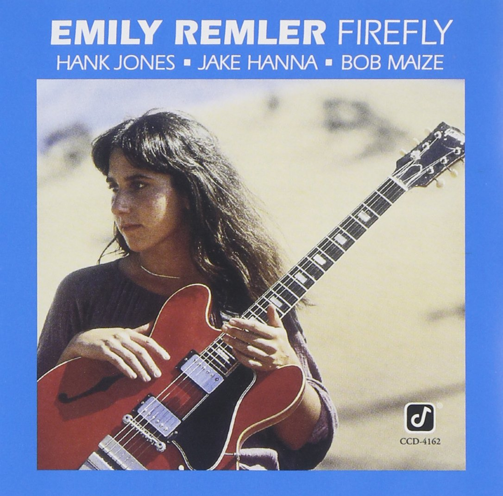
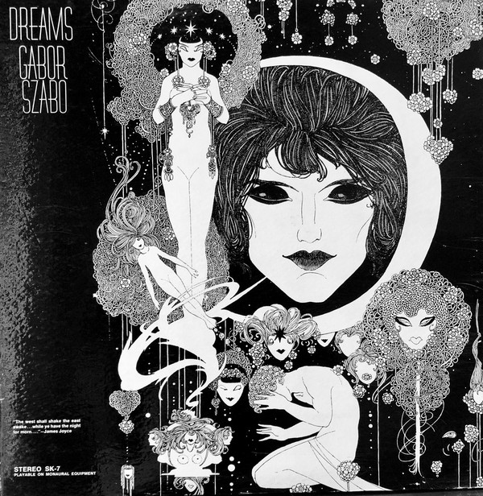

Surprising nobody who lived in a world without them, the advent of music streaming services has dramatically changed music consumption habits. Most of the changes center the convenience of the consumer - less time fiddling with .mp3s, on-demand service, and a lower overall cost. The downsides to streaming services are innumerable, and will not be the focus here, but one in particular bothers me: how the act of searching for music has become trivial. Smart recommendation algorithms can and will just match you with exactly what you want to hear, or what you think you want to hear.
This has some unintended consequences that would make Foucault blush. Many people listen to songs brought to them by the holy algorithm, and it’s so perfectly aligned to their tastes that it glides right past them. They don’t even know who it’s by, or care to know. Headphones on, playlist begins, don’t worry about it. Names of artists, songs, even genres completely evade listeners because they aren’t useful information to find similar music anymore. The act of listening itself is the search, every song a data point to further narrow the parameters of “you.”
Real heads will tell you another critical flaw of streaming services: what feels like an endless well of music is really not that deep. While a significant portion of the popular acts of yesteryear have a presence, many artists of the past and overseas don’t find the idea of hosting their music on streaming services all that compelling. Who can blame them when the financial incentive is pitiful? Strangely enough, the new home for many of these musical obscurities is YouTube, a space untethered by any real expectations of format or locality. People post albums they find interesting, and sooner or later people find them and listen.
But YouTube is not a perfectly egalitarian archive - no, it too has algorithms to continue servicing content they think you’ll enjoy, so you spend more time there and fatten the pockets of digital marketers everywhere. YouTube’s algorithm isn’t just bizarre, it’s unwieldy. It acts on a whim, promotes tiny DIY videos from the aughts to overnight viral hits, crashes careers of professional YouTubers for not perfectly obeying every hidden content feature required for an automatic marketing push. In a word, the YouTube recommendation algorithm is fucked. It makes no sense, and abides by no humanly comprehensible rules.
One odd, beautiful consequence of this is the unlikely propulsion of obscure artists of the past into modern stardom. Look no further than Mariya Takeuchi’s “Plastic Love,” a beautiful, stylish 1984 pop ballad from Japan that is, inexplicably, instantly recognizable by a sizable chunk of online youths. When music is the content being curated, the infinitely complicated, ever-hungry algorithm-beast plays the unlikely role of hitmaker, an eclectic DJ with a bottomless well of eclectic analog magic to dig up for any ears willing to listen.
What I’d like to shine a light on are four cult classic albums, each with their fans but given a brand new lease on life thanks to the whims of the algorithm. The artists in questions passed away before their work reached the audience it was never fated to have, four Van Goghs who would never understand the respect and admiration they would hold in the years following their deaths. They are, against all odds, the folk heroes of the algorithm.
Ryo Fukui - Scenery (1976)
Ryo Fukui is the ultimate underdog, the people’s champion, jazz’s worst kept secret. For many, his story is possibly more compelling than the music he created - a jazz fan with a limited musical background, he started teaching himself piano at age 22. Six years later, at the age of 28, he released his debut album, Scenery - a testament to his hard work and passion.
I actually have a history with this project predating the algorithmic explosion. Among certain corners of the internet, it has for some time now been the jazz record from Japan. I still think this assertion is wildly reductive (for one, because it ignores the country’s fascinating and robust fusion period), and for a long time I let that stigma of association with Western collectors affect my opinion of it. Over the years, however, it’s beaten me down, and I can no longer deny its appeal.
Scenery 's best quality is the wonderful curation of the standards being played. There is a thematic feel to the record, with natural ebbs and flows in tone and energy that help showcase Ryo and his cohorts in a variety of styles. For 1976, it’s fairly old school - calling back to the hard bop days of decades prior and eschewing the more modern work being done in the world of fusion. It isn’t too upright, though - the bombastic “Early Summer” sounds like a holy invocation of the late, great McCoy Tyner, and the moody rendition of “I Want to Talk About You” calling the more nocturnal work of Bill Evans and Vince Guaraldi to mind.
This is not to say that Fukui himself is a virtuosic player, though; Scenery is an album made better by its imperfections. The band is far from the sharpest you’ll hear, and they don’t bring anything particularly bold to the table, but the passion comes through instantly - even through some messier playing they are upbeat and persistent. When those moments do finally come, they feel triumphant and earned. Scenery doesn’t even sound like it’s being performed for a traditional audience, moreso for the titans of the genre, to earn that seat at the table. The cherry on top is the titular finale, “Scenery,” the only original composition. It’s a stoic, bluesy piece that confirms the seriousness of this whole endeavor.
Ryo is the only artist featured here to possibly understand some amount of his modern popularity. A video of the full album, posted by user “Woody Allen” (fucker) was posted in December of 2015 and quickly garnered an audience of millions, likely helped by the relatively novel concept of overseas jazz and that wonderful album cover. Ryo died of lymphoma in just three months later in his home in Sapporo, Hokkaido.
Emily Remler - Firefly (1981)
Emily Remler was the prodigy Fukui could never have been. A Jewish woman from New Jersey, she first picked up a guitar at only 10 years old, and spent her adolescence glued to her instrument of choice, eventually attending Berklee to study jazz guitar. At the age of 21, Herb Ellis was calling her a superstar. After three years playing in blues clubs in New Orleans, she released Firefly , her first recorded work.
Like Fukui, Remler was an old soul. Her inspiration resided in the original titans of jazz guitar: swing legend and fellow prodigy Charlie Christian, collaborator extraordinaire Joe Pass, and especially the bluesy, hard bop stylings of Wes Montgomery. The result is that Firefly is a record played neatly and poised, with a quiet confidence that echoed far, far beyond her 24 years of age.
The opening moments of the album’s opener, a gorgeous interpretation of Horace Silver’s “Strollin’,” basks the room in a glow. Its sunny, colorful bounce captures a particular serenity in Remler’s playing that shines across the entire 40-minute runtime, like she knows precisely where to take any song at any moment, like she was born to put on a perfectly organized show. Remler was a gifted frontwoman, and she feels right at home with the bright curation of tunes.
Obvious talent aside, Firefly can occasionally feel like the debut project it is. Remler’s love for the old-school seems to clash with her ability to start soaring, and she can play a few tunes, namely her own goofy “Perk’s Blues” and McCoy Tyner’s “Inception,” a bit too straight-laced. Firefly can also feel like a stepping stone towards something more introspective and contemporary. The gentle, drop-dead gorgeous “A Taste of Honey” and her rock-tinged glide through Wes Montgomery’s “Movin’ Along” seem to mirror the ECM style that guitarists of the era (Rypdal, Metheny, Abercrombie) commandeered, despite her fascination with the classics. Perhaps she could’ve incidentally furthered that emerging sound had she been given more time.
Despite acclaim for her talents among critics and peers, her legacy was marred by poor longevity. Remler had demons, and she medicated with hard drugs that would contribute to her heart failure in 1990, at only 32 years old. Her passing was preceded by the recording of only her 7th project, This Is Me - a woefully short catalogue in comparison to her peers. Like many pioneering artists whose legacy will live forever, Remler’s also faded, momentarily. While the original viral YouTube upload of Firefly has since been taken down, it too reached an extraordinary pocket of internet listeners, recentering the spotlight on a forgotten prodigy.
Gábor Szabó - Dreams (1968)
I’m cheating a little bit here: Hungarian guitarist Gábor Szabó has definitely seen his fair share of success, and well before YouTube had multiple claims to fame. He’s the original songwriter for “G**** Queen,” made famous as one-half of Carlos Santana’s “Black Magic Woman.” He’s recorded with legendary jazzists like Tony Williams, Ron Carter, Bobby Womack and Mingus affiliates Chico Hamilton and Charles Lloyd. Though a C-lister himself, perhaps Szabó’s work did not need or warrant reappraisal.
A hazy release right in the middle of Szabó’s career, Dreams is unsurprisingly otherworldly, but it also escapes any simple description. It can appear both incredibly, meticulously assembled, with tight orchestral arrangements reminiscent of third-stream, and the next moment rid itself of all structure, channeling a folksy, Manouche freedom. Szabó’s smoky guitarwork is somber and theatric, as though it once accompanied a storyteller’s tale through a long night at the campfire.
Every track on Dreams builds toward an incorporeal setting, one of dancers and psychics. There is something deeply sad about the sound it aims to create - whether that’s a rhythm guitar stirring up tension in “The Fortune Teller” or a dissociative three-guitar quilt in “Song of Injured Love” that feels like a heavy joy, one fighting through pain. Even the bouncy intro “Galatea’s Guitar” sounds glum despite its groove and funk. One can only assume Szabó’s dreams kept him awake at night, if this is what they sounded like.
Dreams is also occasionally a striking vision of the future. Its loose, folksy sound would be iterated on by the aforementioned Carlos Santana on his 1972 project Caravanserai, despite its overt jazz-fusion nucleus. “Half the Day Is the Night” and the climactic closer “Ferris Wheel” incorporate baroque string sections for melancholic, looping harmonies that would not sound out of place in the post-rock-laced indie scene of the mid 2000s, notably Arcade Fire and The Antlers, despite preceding them by nearly 40 years.
Surrounded by family in Budapest, Szabó passed away in 1982 of liver and kidney failure. He never lived to see the World Wide Web or the first commercial release of CDs, let alone watch a video of his own music play on a website. Still, his music inspired psychedelic curator Cubensis Records (to my knowledge, not an actual label) to share the entirety of Dreams in late 2015, nearly 33 years after his death, garnering millions of listens.
Mort Garson - Plantasia (1976)
A small-time 1960s songwriter and composer, Mort Garson was an unassuming protagonist. He was well-received in smaller electronic circles for his instrumental work, even recording with Elektra and A&M, but never found widespread success. Plantasia , his last project before retirement, was an LP first conceived to be bundled with plants bought from Los Angeles horticultural outlet Mother Earth and played to spur their growth. It was an impossibly pure send-off.
Plantasia is unique in that it sounds influential even when it wasn’t, sparking comparisons to a number of 1990s video game soundtracks (notably Earthbound and some DOS titles such as Sam & Max ) and of course, Stevie Wonder’s similarly-inspired soundtrack for The Secret Life of Plants , which would be released only 3 years later. It even predates so-called tribal ambient, sparked by Jon Hassell’s Vernal Equinox , by 2 years. With the success of similar projects shortly after its release, it can be surprising that Plantasia languished in obscurity for most of its life; in retrospect, it seems it could have been a tipping point for electronic music as a whole, something that perfectly predicted where it was heading.
The album is very much a ‘progressive electronic’ record (a la the Berlin School), recorded in its entirety with a first-wave MOOG synthesizer. The “progressive” half of that label can be felt immediately in tracks like “Symphony for a Spider Plant” and “Concerto For Philodendron & Pothos,” with their concurrent synth leads weaving in and out to create a fantastical, psychedelic arrangement. In another timeline, perhaps “A Mellow Mood For Maidenhair” is a space-rock opera instead of an brooding, alien synth jam.
It’s a decidedly optimistic space-age project, and while it’s not free of the lighthearted kitsch commonly associated with the era, it works in its favor. “Baby’s Tears Blues” is sly, sultry noir music to skulk through an alley to; “You Don’t Have to Walk a Begonia” embodies a juvenile, circus-like jest. In concept and execution, Plantasia captures the wonderment of the pre-digital era, content to spark feelings of joy, excitement, and love for their own sake.
Mort Garson passed away of renal failure in 2008, well before Plantasia had a renewed lease on life. While he wouldn’t live to see the legions of adoring listeners for his work released over 30 years prior, he has been posthumously recognized as a visionary, one that was able to capture the mysterious and the provocative. The meteoric rise in popularity of Plantasia might be the algorithm’s finest moment, and one of the more joyful moments in internet history.
I am not a believer that music distribution and exploration is in a good place. It’s automated to the point of frictionlessness, and hardly engages the average listener. Without a system to really describe the qualities that you desire in music, or widespread vocabulary necessary or sufficient to make those qualities enumerable, the best the robots can do is guess. When major streaming platforms are financially incentivized to serve you music from the biggest labels, or to swerve you off of a path of deeper, niche discovery, everyone is kept in a tidy, if large musical bubble.
Still, I cannot deny the mysticism of a recommendation algorithm forming a new digital canon, possibly because YouTube is not specifically designed to deliver music but has to anyway. Human perusal through the music of yesteryear is highly predicated on critical consensus, marketing, and enduring celebrity. Despite its immalleability, an automated approach untethered to human concepts of success or popularity at least has something new to say about which artists deserved to survive the fade, to form an lasting legacy. It has no clear methodology, but it can be viewed as a form of historical correction.
It also invites the listener to imagine an alternate history where these works did receive large-scale success in their day, perhaps inspiring others to follow suit and kicking off a different timeline of musical evolution. It’s also a quaint, if pointless exercise to imagine what YouTube’s algorithm sees in the music it propels to fame, if it too hears the talent and promise of these artists or just arbitrarily delivers based on unknowable criteria embedded in the upload itself.
There is something certain about this situation, though: that it will continue indefinitely. Recommendation algorithms are very fancy profit-maximizing content delivery systems and there is no doubt in my mind that this practice will persist forever until something with even greater financial incentive comes along to replace it. These four artists may be some of the first to experience algorithmic success, but they will not be the last. I just hope that some of the folks who get selected by the machine in the future can live to see it.